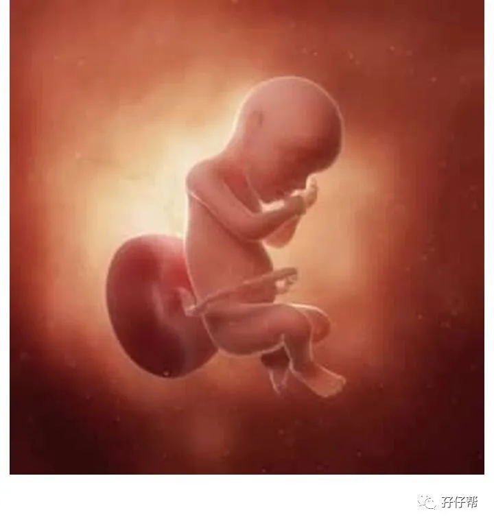
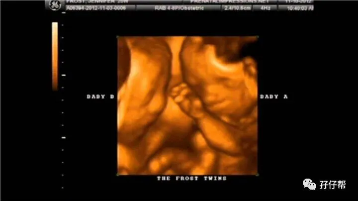

文|圆圈妈，一个文思如尿崩的双胎妈妈
图|来自网络，如有侵权，请联系删除
· 正 · 文 · 来 · 啦 ·
【01】两胎儿的发育情况
孕30周的胎宝宝有一颗大白菜那么大了，从头部到臀部长约40.1CM，约1411G▼：
孕30周的双胞胎胎儿发育图▼：
B超孕30周的双胞胎胎儿影像图▼：
【02】圆圈妈的孕期回忆录
Ⅰ 两周一次产检
医生建议，双胎妊娠的孕妇，孕28周开始，产检周期缩短至每两周一次。
孕周30W+1这天，我像个即将准备期末考的小学生，颤巍巍地起床准备双胎妊娠的第七次产检。
圆圈爸为了赚奶粉钱，这段时间整天整夜耗在腾讯大厦孤军奋战，已经无暇顾及我们娘仨了，婆婆心疼儿子，自告奋勇要陪我去产检。
约了八点钟的号，在上班高峰期坐上了317区间车，OH，不，不是坐上，而是我的巨肚把车上的人都吓跑了。
我不费吹灰之力就在水泄不通的车厢内找到了一个座位，乘务员抛给我一个“你真彪悍！”的表情....
在市二医院站下车之后还要再走100，接着经过一个天桥，天桥下来之后继续走300米远才到。
这要是在孕前，凭我的矫健身姿，小意思。
可是此刻的我，是孕30周的双胎孕妇，已经严重行动不便了。
曾经五分钟的路程，我居然走了十五分钟。
尤其是上天桥的时候，我好像蜗牛一样一步一步往上爬，每上一个台阶就抱着肚子喘口气歇一下，然后大口深呼吸以下，继续往上走…
看着眼前的台阶，张牙舞爪地向我示威，有种“虎落平阳被犬欺”的挫败感。
想当年我可是甲级写字楼联合广场爬楼大赛的冠军啊！
跟在我后面的婆婆也好不到哪里去，她身体不好，上台阶也要累得大口喘气那种。
我有点后悔答应她陪我来产检了，我不知道要照顾自己还是要照顾她。
我们两都半斤八两，走一步歇一下，我看看你，你看看我，无奈极了，个中滋味彼此都明白了。
我们这奇怪的走路姿势招来不少路人围观，经过的人都纷纷顿足，侧目回头看着肚大如箩的我,疑惑，犹豫…
我知道他们想干嘛。
估计以为我是马上要生了，一定在纠结着要不要报警，帮帮我这个可怜的孕妇。
我尴尬极了。
可想而知，我那才30周的肚子给社会带来了多么大的轰动!
Ⅱ 一份双胎妊娠的特别医嘱
这次约了市二医院的产科一把手孙医生，果然是主任，确实不一样，对待我这样一个孕晚期的双胎准妈妈，说了一大堆话。
大概意思就是：两周一次B超是必须的，顺产可能性不大，贫血要赶紧纠正，宫颈短少走动，没事就躺床上，36周差不多就生了吧！
可是，她对排在我前面的单胎妈妈是这样说的：“孕后期多注意，争取熬到40周，没事就爬下楼梯，去外面多散步，别老躺床上，对顺产不好！”
我心里感慨极了，这就是单胎和双胎的区别吧！双胎的特殊性和区别对待就是这么赤裸裸！
Ⅲ 第二次胎监，幸福与酸爽并存
医生照例给我安排了胎心监护。
第二次胎监，没有第一次的笨拙和狼狈，还好问了下护士，原来其实是可以侧躺的，晕…不早点说！
侧躺着的姿势舒服多了，这次也比较顺利，20分钟左右就完成了。
听到两个崽崽们的心跳，好有力量哦！幸福满满的！曾经很想卸货早点解脱！可是突然间又那么不舍得。这一路走来，我早已习惯了他们的存在！
这次的胎监提示居然是正常的，我怀疑28周那会儿提示轻微宫缩可能是我错误操作导致的。
☞☞TIPS☜☜：请明确告诉护士，你是双胎妊娠，如果平时有数胎动，掌握到两胎儿的规律，那就大胆地告诉护士两胎儿的大概位置，省得遇到没经验的护士在你肚子上找胎心耗费了大半天的时间。
在放置探头之前，请护士多给点时间找个舒服点的姿势躺着，或者抱着孕妇枕有备而来也可以。
胎监是个最不守时最不受信用的家伙，说好的20分钟随时随地会因为各种原因把你折腾到一个世纪那么久，还是早做防备吧！
早日摸清两胎儿的作息，尽量选择他们较活跃的时间段做胎监。
做之前事先吃点东西，来回走动下，晃下肚皮，在胎监过程中，哼一首小曲，让两宝宝在做胎监期间，陪你一起嗨下。
总之，目的只有一个，在最短的时间内一次性通过胎心监护！
Ⅳ 贫血的坑，我踩着了，却爬不出来
查了血常规，结果显示，贫血依然没有改善，医生建议我换个效果好的补铁药，蛋白琥珀酸铁口服溶液（菲普利）。
一种进口药，价格贵，不能刷医保，只能自费。
一想到要掏兜里的钱，我就犹豫了。
知道双胎容易早产，我和圆圈爸早早就把预防他们早产救命用的钱东凑西借准备好了。
进口药这么贵，少花一分钱也是钱。
贫穷，限制了我的选择。
我弱弱地让医生给我换了另外一种国产的便宜补铁药！
☞☞TIPS☜☜：大约有1/3的准妈妈会有不同程度的贫血。对于明确的临床贫血，一般不建议食补，因为食补太慢。
另外吃太多的红肉和内脏是可以纠正贫血，但是蛋白质的量往往会超标，会增加肾脏和肝脏的代谢负担。一般只会推荐铁蛋白缺乏和轻度贫血的准妈妈食补。
来源：段涛大夫《怀孕生孩子那些事 之 那些孕期经常用到的药物》
就酱….我的双胎妊娠的第七次产检，毫无悬念过关了。
【03】插播一些孕后期的囧事
① 我的大猪蹄似的腿子
我的水肿越来越严重了，之前只是下午和傍晚，脚背按下去会凹陷一大片，过一会儿能完全消失。
现在是手臂，大腿处都有不同程度的水肿，且无法完全消失，若不是上周做产检的尿常规和血液正常我真怀疑自己是不是有子痫前症了。
② 我快要走不动了
我逐渐丧失了运动能力，前几周还能坚持去附近的别墅区走走，接着只能走原来路程的一半，后来又减少到一半的一半，现在只能下楼到200米远的广场处溜达了，而且必须是状态很好的时候。
我感觉外阴静脉曲张越来越厉害了，有肿胀感，无时无刻都有疲倦感，稍微走一会儿就觉得累，肚子异常大，让很多人都误以为我要生了。
③我没有衣服可以穿了
网上买的那条XXXL的裙子据说已经穿了两天了，依然没机会换下来，因为我真的找不到一件可以替换的衣服了。
那些好看的孕妇装已经彻底跟我绝缘了，网店客服听到我的体重和腹围纷纷表示无能为力，另选高明。
④我总感觉眼花
我发现我的视力有些下降了，看眼前的东西有模糊感，感觉眼前好几条小虫子在晃动。
起初我以为是躺着看书追剧，用眼过度，稍微收敛了下，可是并没有缓解，依然有蒙查查的错觉。
☞未完待续☜
上期推文:
连载（一）|圆圈妈双胞胎怀孕过程第4周
连载（二）|圆圈妈双胞胎怀孕过程第5周
连载（三）|圆圈妈双胞胎怀孕过程第6周
连载（四）|圆圈妈双胞胎怀孕过程第7周
连载（五）|圆圈妈双胞胎怀孕过程第8周
连载（六）|圆圈妈双胞胎怀孕过程第9周
连载（七）|圆圈妈双胞胎怀孕过程第10周
连载（八）|圆圈妈双胞胎怀孕过程第11周
连载（九）|圆圈妈双胞胎怀孕过程第12周
连载（十）|圆圈妈双胞胎怀孕过程第13周
连载（十一）|圆圈妈双胞胎怀孕过程第14周
连载（十二）|圆圈妈双胞胎怀孕过程第15周
连载（十三）|圆圈妈双胞胎怀孕过程第16周
连载（十四）|圆圈妈双胞胎怀孕过程第17周
连载（十五）|圆圈妈双胞胎怀孕过程第18周
连载（十六）|圆圈妈双胞胎怀孕过程第19周
连载（十七）|圆圈妈双胞胎怀孕过程第20周
连载（十八）|圆圈妈双胞胎怀孕过程第21周
连载（十九）|圆圈妈双胞胎怀孕过程第22周
连载（二十）|圆圈妈双胞胎怀孕过程第23周
连载（二十一）|圆圈妈双胞胎怀孕过程第24周
连载（二十二）|圆圈妈双胞胎怀孕过程第25周
连载（二十三）|圆圈妈双胞胎怀孕过程第26周
连载（二十四）|圆圈妈双胞胎怀孕过程第27周
连载（二十五）|圆圈妈双胞胎怀孕过程第28周
连载（二十六）|圆圈妈双胞胎怀孕过程第29周
下期预告：
连载（二十八）|圆圈妈双胞胎怀孕过程第31周
-END-
重磅互动
#你希望写什么育儿经验干货？#
评论区聊一聊
随便提，万一下篇就写了呢？
关于这个号
谢谢关注！
我是圆圈妈
85后，全职妈妈
家有孖仔两枚，圆圈&圈圈
双胞胎育儿公众号：孖仔帮
ID:twinsbang
旨意分享双胞胎育儿经验帮助双胞胎家庭
有经验可循
有组织可靠
希望我的经验对您有所启发
期待与您一起共享双胞胎育儿经

